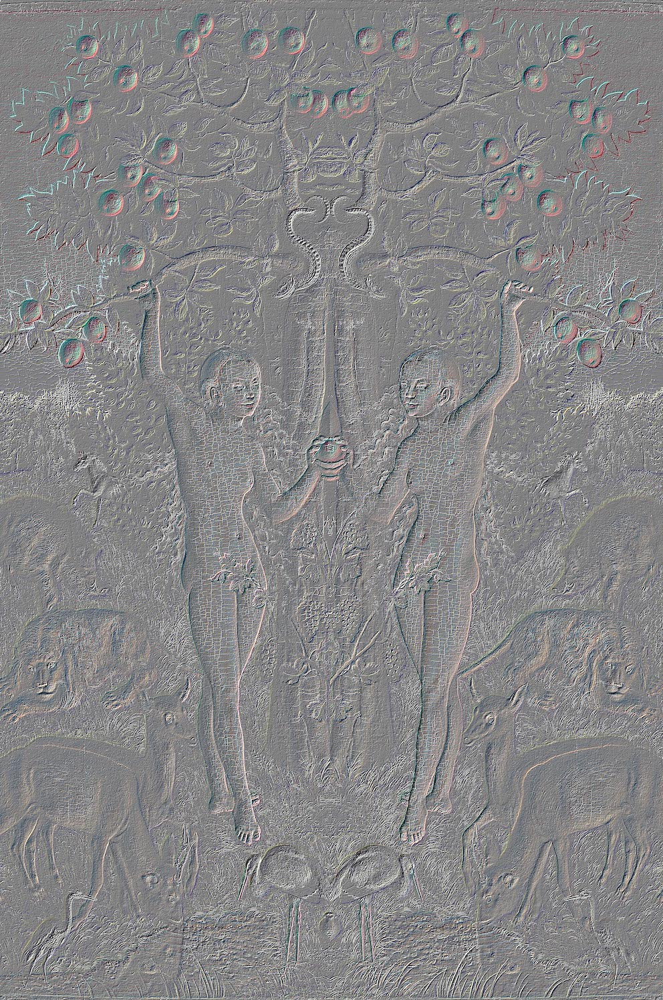

After Rubens, degree show at Städelschule, 2018
Globe II was showed in my degree show from städelschule in 2018., displayed on a monitor to wall. A second version of the work was made in 2026 (see Globe II)

EVESize of a large museum postcard, on wall, 2018
 Nancy Halt caravan was also parked outside the Museeum with a video installed inside, (see Nancy Halt).
Nancy Halt caravan was also parked outside the Museeum with a video installed inside, (see Nancy Halt).